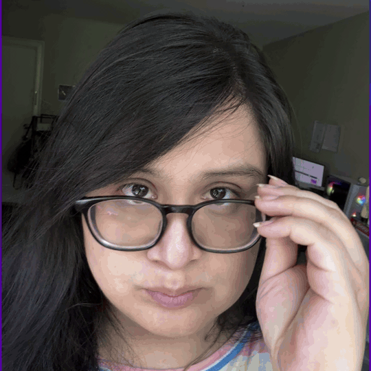
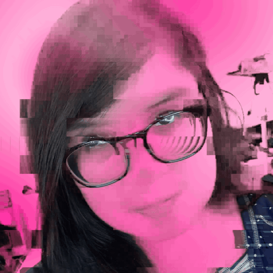

Pop Maker Studio
Local-first video editor · MCP & AI controllable · C++ · No cloud


A general-purpose video editor written entirely in C++ from scratch — no Electron, no Python runtime, no cloud. Compose clips on a multi-track timeline, apply 100+ GPU-accelerated GLSL effects, separate vocals, transcribe speech to word-level timestamps, remove backgrounds, and convert voices — all ML inference runs fully on-device via ONNX Runtime. The entire editing surface is exposed over the Model Context Protocol: drop it into Claude, Codex, or any MCP client and let your AI agent cut, style, and export without touching the UI. Pixel-identical preview and export. One binary. Nothing to install.


Format
Desktop App
Language
C++ / GLSL
AI Control
MCP Server
Platform
Linux
License
GPLv3